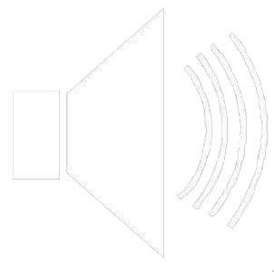

<!DOCTYPE html>
<html lang="en">
<head>
    <meta charset="utf-8">
    <meta name="viewport" content="initial-scale=1, maximum-scale=1, minimum-scale=1, user-scalable=no">
    <title>AreTalkTest</title>

    <link rel="stylesheet" href="lib/swiper/css/swiper.min.css">

    <link rel="stylesheet" href="src/css/test.css">
    
    <script src="lib/jquery-1.12.2.min.js"></script>
    <script src="lib/flexible/js/flexible.js"></script>
    <script src="lib/flexible/js/flexible_css.debug.js"></script>
    <script src="lib/flexible/js/flexible.debug.js"></script>  
   
</head>
<body>
    <!-- Swiper -->
    <div class="swiper-container">
        <div class="swiper-wrapper">
 


<!--             <div class="swiper-slide stop-swiping">
    <div class="testBox">
    <div class="title">题目标题</div>
    <div class="testMain">
    <div class="TestContent">
        题目内容题目内容题目内容题目内容题目内容题目内容
    </div>  
     
                
    <audio class="testaudio" >                    
        <source src="src/mp3/test.mp3" type="audio/mpeg">  
    </audio>

    </div>
    <div class="options" >
        <div class="answer" ><span class="mark">A</span>东</div>
        <div class="answer" ><span class="mark">B</span>西</div>
        <div class="answer" ><span class="mark">C</span>北</div>
        <div class="answer" ><span class="mark">D</span>自杀</div>

        <div class="ADTest submitBtn" TrueAnswer="a">提交</div>
    </div>
    
</div>
</div>


<div class="swiper-slide stop-swiping">
    <div class="testBox">
    <div class="title">第二题</div>
    <div class="testMain">
        <div class="TestContent">
        女友告诉你再到前门大街等她接你一起回家，你在公交车上听到广播提醒：“前门到了，请您从后门下车。”这个时候你到底从哪里下车？
        </div>
                         
                           
    </div>
    <div class="options">
        <div class="answer" ><span class="mark">A</span>前门</div>
        <div class="answer" ><span class="mark">B</span>后门</div>
        <div class="answer" ><span class="mark">C</span>跳窗</div>
        <div class="answer" ><span class="mark">D</span>自杀</div>
        <div class="ADTest ani submitBtn" TrueAnswer="b">提交</div>
    </div>

     
   
</div>
</div>


<div class="swiper-slide stop-swiping">
    <div class="testBox">
    <div class="title">第三题</div>
    <div class="testMain">女朋友给你打电话：如果你到了，我还没到，你就等着吧；如果我都到了，你还没到，你就等着吧！那请问你到底要不要等？</div>
    <div class="options">
        <div class="answer"><span class="mark">A</span>还是等一等吧</div>
        <div class="answer"><span class="mark">B</span>一直等到她来</div>
        <div class="answer"><span class="mark">C</span>应该不用等了</div>
        <div class="answer"><span class="mark">D</span>自杀</div>

        <div class="ADTest ani submitBtn" TrueAnswer="c">提交</div>                    
    </div>
    
</div>   
</div> 


<div class="swiper-slide stop-swiping">
    <div class="testBox">
    <div class="title">第四题</div>
    <div class="testMain">女朋友给你打电话：如果你到了，我还没到，你就等着吧；如果我都到了，你还没到，你就等着吧！那请问你到底要不要等？</div>
    <div class="IMGoptions">
        <div class="IMGanswer"><div class="IMGmark">A</div></div>
        <div class="IMGanswer"><div class="IMGmark">B</div></div>
        <div class="IMGanswer"><div class="IMGmark">C</div></div>
        <div class="IMGanswer"><div class="IMGmark">D</div></div>
        <div class="clear"></div>

        <div class="ADTest ani submitBtn" TrueAnswer="c">提交</div>                    
    </div>
    
</div>   
</div> 
          
 -->
        </div>
        <!-- Add Pagination -->
        <div class="swiper-pagination"></div>
        <div class="swiper-button-next"></div>
        <div class="swiper-scrollbar"></div>

    </div>

    
  
    <script src="lib/swiper/js/swiper.min.js"></script>

    <script src="src/js/test.js"></script>

</body>
</html>